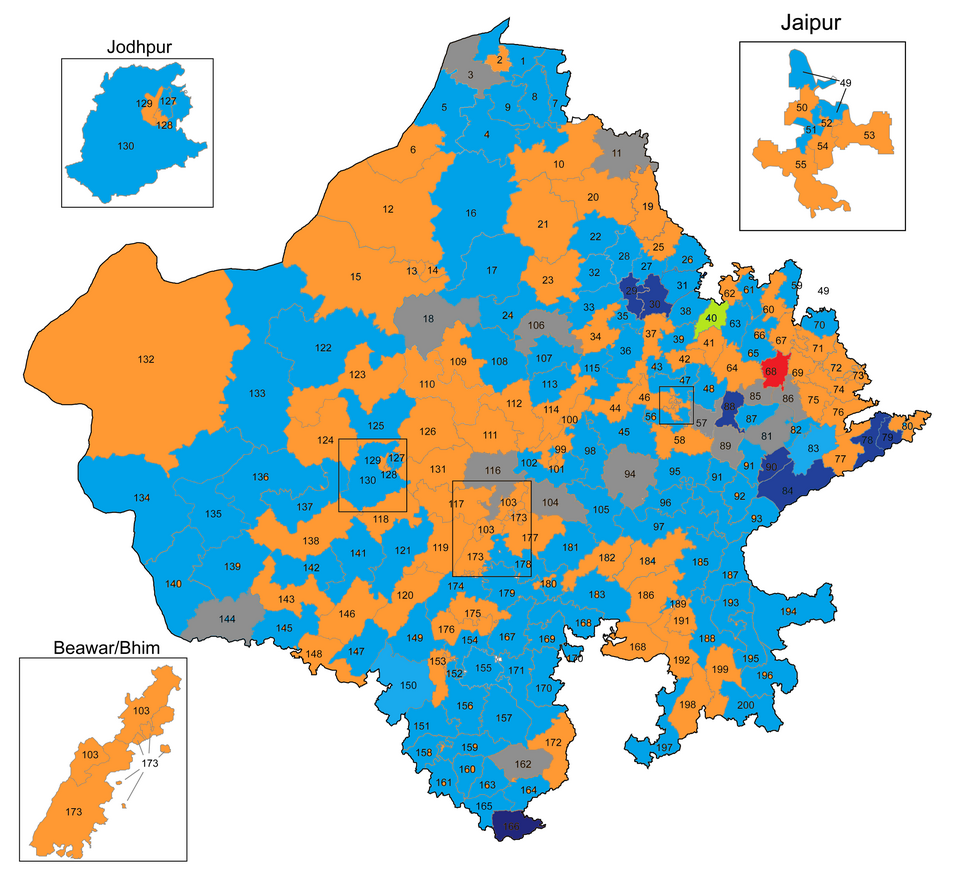

राष्ट्रीय
 राष्ट्रीय
राष्ट्रीयवाराणसी के नमो घाट पर 'भजन क्लबिंग' का आयोजन, पीएम मोदी ने की युवाओं के उत्साह की सराहना
वाराणसी के नमो घाट पर चार दिवसीय गंगा महोत्सव के दौरान 'भजन क्लबिंग' का आयोजन किया गया। आधुनिक बीट्स पर पारंपरिक भजनों के इस कार्यक्रम में युवाओं ने भारी उत्साह दिखाया, जिसकी प्रधानमंत्री नरेंद्र मोदी ने सराहना की है।
राष्ट्रीयकानून के पेशे में सफलता का कोई शॉर्टकट नहीं, मेहनत ही सबसे बड़ा मंत्र: अभिषेक मनु सिंघवी
कांग्रेस के वरिष्ठ नेता और वरिष्ठ वकील अभिषेक मनु सिंघवी ने कहा है कि वकालत में सफलता का कोई निश्चित फॉर्मूला नहीं है, लेकिन इसमें 99 प्रतिशत योगदान लगातार मेहनत का होता है।
 राष्ट्रीय
राष्ट्रीयपीएम मोदी का पश्चिम बंगाल, बिहार और उत्तर प्रदेश का दौरा आज
प्रधानमंत्री नरेंद्र मोदी आज पश्चिम बंगाल, बिहार और उत्तर प्रदेश के दौरे पर हैं। वे आईआईटी खड़गपुर के समारोह में शामिल होने के अलावा विभिन्न विकास परियोजनाओं की सौगात देंगे।
राष्ट्रीयबिहार: बाहुबली विधायक अनंत सिंह ने अपनी बेटी की शादी में दामाद को दिए जेवर और बर्तन
बिहार के मोकामा से विधायक अनंत सिंह ने अपनी बेटी की शादी में दामाद को लग्जरी गाड़ी डिफेंडर, 18 तोला सोने के आभूषण और सोने-चांदी के बर्तन उपहार में दिए हैं।
राष्ट्रीयआईआईटी खड़गपुर के प्लेटिनम जुबली समारोह में शामिल हुए पीएम मोदी
प्रधानमंत्री नरेंद्र मोदी ने देश के पहले भारतीय प्रौद्योगिकी संस्थान, आईआईटी खड़गपुर के प्लेटिनम जुबली समारोह में हिस्सा लिया और '75 वॉइसेज फॉर विकसित भारत' पहल के तहत छात्रों से संवाद किया।
 राष्ट्रीय
राष्ट्रीयदक्षिण दिल्ली में शादियों के कारण ट्रैफिक जाम की आशंका, पुलिस ने जारी की एडवाइजरी
दक्षिण दिल्ली में शनिवार को 27 से अधिक शादियों के कारण भारी ट्रैफिक जाम की आशंका है। दिल्ली ट्रैफिक पुलिस ने एडवाइजरी जारी कर लोगों को मेट्रो का उपयोग करने और प्रभावित रास्तों से बचने की सलाह दी है।
राष्ट्रीयमेटा के ऑफिसों में यूथ कांग्रेस का प्रदर्शन, चार के खिलाफ एफआईआर
इंस्टाग्राम अकाउंट सस्पेंड होने के विरोध में यूथ कांग्रेस ने हैदराबाद, मुंबई और गुरुग्राम में मेटा के ऑफिसों के बाहर प्रदर्शन किया। मुंबई पुलिस ने यूथ कांग्रेस अध्यक्ष समेत चार लोगों के खिलाफ मामला दर्ज किया है।
राष्ट्रीयइंदौर में डबल मर्डर: घर में बेटी और बोरे में मिला पिता का शव
मध्य प्रदेश के इंदौर में दो अलग-अलग स्थानों पर पिता-पुत्री के शव मिलने से सनसनी फैल गई है। पुलिस ने संपत्ति विवाद के चलते मृतक के बेटे पर हत्या की आशंका जताई है।
राष्ट्रीयरामा और श्यामा तुलसी में क्या है अंतर, घर में कौन सी लगाना माना जाता है शुभ
हिंदू धर्म में रामा और श्यामा तुलसी दोनों को पवित्र माना गया है। जानिए दोनों में क्या अंतर है और घर में कौन सी तुलसी लगाना ज्यादा शुभ होता है।
 राष्ट्रीय
राष्ट्रीयकिरेन रिजिजू का राहुल गांधी पर पलटवार, 1962 के युद्ध और आर्थिक नीतियों पर पूछे सवाल
केंद्रीय मंत्री किरेन रिजिजू ने राहुल गांधी के ‘कम्प्रोमाइज्ड PM’ वाले बयान पर नाराजगी जताई है। उन्होंने 1962 के भारत-चीन युद्ध और पिछली आर्थिक नीतियों को लेकर कांग्रेस से जवाब मांगा है।
राष्ट्रीयमुख्यमंत्री योगी आदित्यनाथ ने मां सावित्री देवी को दी अंतिम विदाई
उत्तर प्रदेश के मुख्यमंत्री योगी आदित्यनाथ अपनी मां सावित्री देवी के निधन पर अंतिम यात्रा के दौरान भावुक नजर आए। उन्होंने पार्थिव शरीर को कंधा दिया और हरिद्वार में अंतिम संस्कार किया जाएगा।
राष्ट्रीयबाराबंकी में पूर्वांचल एक्सप्रेसवे पर भीषण सड़क हादसा, पिकअप और एंबुलेंस की टक्कर में पांच की मौत
उत्तर प्रदेश के बाराबंकी जिले में पूर्वांचल एक्सप्रेसवे पर एक पिकअप और एंबुलेंस के बीच हुई टक्कर में पांच लोगों की मौत हो गई। सूचना मिलने पर पुलिस और राहत दल मौके पर पहुंचे।
 राष्ट्रीय
राष्ट्रीयसीबीएसई कक्षा 10 गणित की परीक्षा 17 फरवरी को होगी आयोजित
केंद्रीय माध्यमिक शिक्षा बोर्ड (CBSE) ने 10वीं कक्षा की गणित परीक्षा की तारीख घोषित कर दी है। परीक्षा 17 फरवरी को सिंगल शिफ्ट में होगी।
राष्ट्रीयमणिपुर के चंदेल जिले में जहरीली शराब पीने से 11 लोगों की मौत, 300 से अधिक अस्पताल में भर्ती
मणिपुर के चंदेल जिले में जहरीली शराब पीने से 11 लोगों की मौत हो गई है और 300 से अधिक लोगों को अस्पतालों में भर्ती कराया गया है। मुख्यमंत्री युमनाम खेमचंद सिंह ने स्थिति का जायजा लिया और जांच के आदेश दिए हैं।
राष्ट्रीयदादा साहब फाल्के इंटरनेशनल फिल्म फेस्टिवल अवॉर्ड्स 2026 की घोषणा, 'धुरंधर' बनी सर्वश्रेष्ठ फिल्म
साल 2026 के लिए दादा साहब फाल्के इंटरनेशनल फिल्म फेस्टिवल अवॉर्ड्स का एलान कर दिया गया है। फिल्म 'धुरंधर' को सर्वश्रेष्ठ फिल्म चुना गया है, जबकि रणवीर सिंह और कमल हासन समेत कई हस्तियों को सम्मानित किया गया है।
राष्ट्रीयपंजाब: ASI इकबाल सिंह हत्याकांड का मुख्य शूटर मुठभेड़ के बाद गिरफ्तार
पंजाब पुलिस की एंटी-गैंगस्टर टास्क फोर्स ने जीरकपुर के एक होटल में मुठभेड़ के बाद एएसआई इकबाल सिंह हत्याकांड के मुख्य आरोपी हरप्रीत सिंह उर्फ हैप्पी बहमन को गिरफ्तार कर लिया है।
राष्ट्रीयदिल्ली में महिला इंफ्लुएंसर से शादी की जिद करने वाले युवक की मौत, दो गिरफ्तार
दिल्ली में एक महिला इंफ्लुएंसर से शादी की जिद पर अड़े युवक की पिटाई के बाद मौत हो गई। पुलिस ने मामले की जांच के बाद महिला के पिता और एक पड़ोसी को गिरफ्तार कर लिया है।
राष्ट्रीयपूर्वी दिल्ली के मधु विहार में शादी का प्रस्ताव देने पहुंचे युवक की हत्या
पूर्वी दिल्ली के मधु विहार इलाके में एक सोशल मीडिया इंफ्लुएंसर को शादी का प्रस्ताव देने गए युवक की बेरहमी से पिटाई के बाद मौत हो गई। पुलिस ने लड़की के पिता समेत कई आरोपियों को गिरफ्तार किया है।
 राष्ट्रीय
राष्ट्रीयसांसद अमृतपाल सिंह दादी के अंतिम संस्कार में शामिल होने असम से दिल्ली लाए गए
असम की डिब्रूगढ़ जेल में बंद सांसद अमृतपाल सिंह को दादी के अंतिम संस्कार में शामिल होने के लिए दिल्ली लाया गया है। पंजाब पुलिस उन्हें कड़ी सुरक्षा के बीच पंजाब लेकर जा रही है।
राष्ट्रीयप्रधानमंत्री नरेंद्र मोदी आज जाएंगे IIT खड़गपुर, प्लेटिनम जुबली समारोह में लेंगे हिस्सा
प्रधानमंत्री नरेंद्र मोदी शनिवार को पश्चिम बंगाल के IIT खड़गपुर के प्लेटिनम जुबली समारोह में शामिल होंगे। इस दौरान वह 75 छात्रों से संवाद करेंगे और एक विशेष सिक्का भी जारी करेंगे।
 राष्ट्रीय
राष्ट्रीयप्रधानमंत्री नरेंद्र मोदी आज जाएंगे IIT खड़गपुर, प्लेटिनम जुबली समारोह में लेंगे हिस्सा
प्रधानमंत्री नरेंद्र मोदी शनिवार को पश्चिम बंगाल के IIT खड़गपुर के प्लेटिनम जुबली समारोह में शामिल होंगे। इस दौरान वह 75 छात्रों से संवाद करेंगे और एक विशेष सिक्का भी जारी करेंगे।
राष्ट्रीययूपी के मुख्यमंत्री योगी आदित्यनाथ की मां सावित्री देवी का निधन
उत्तर प्रदेश के मुख्यमंत्री योगी आदित्यनाथ की मां सावित्री देवी का निधन हो गया है। उनके निधन के बाद गांव पंचूर में संन्यास लेने के बाद योगी के पहली बार घर लौटने और मां द्वारा भिक्षा दिए जाने के भावुक पल को लोग याद कर रहे हैं।
राष्ट्रीयउत्तर भारत में ठंड और कोहरे का असर तेज, कई राज्यों में बारिश का अनुमान
देश के कई राज्यों में ठंड और कोहरे का असर बढ़ने लगा है। राजस्थान के फतेहपुर में तापमान 5.5 डिग्री सेल्सियस दर्ज किया गया, जबकि चक्रवात अकवान के प्रभाव से ओडिशा, पश्चिम बंगाल और बिहार समेत कई इलाकों में बारिश हो रही है।
राष्ट्रीयअसम से एयरलिफ्ट कर जामनगर के वंतारा पहुंचाया गया घायल हाथी का बच्चा
असम में जन्म के समय चोटिल हुए सात हफ्ते के हाथी के बच्चे ‘राजा’ को बेहतर इलाज के लिए अनंत अंबानी की पहल पर जामनगर के वंतारा केंद्र एयरलिफ्ट किया गया है।
राष्ट्रीयमुंबई में नेवल डॉकयार्ड की संवेदनशील तस्वीरें लीक करने के आरोप में अप्रेंटिस गिरफ्तार
मुंबई पुलिस ने नौसेना के ठिकानों की संवेदनशील तस्वीरें सोशल मीडिया पर शेयर करने के आरोप में नेवल डॉकयार्ड के 21 वर्षीय अप्रेंटिस को गिरफ्तार किया है। अधिकारियों को इसके पाकिस्तान से जुड़े होने का संदेह है।
राष्ट्रीयप्रधानमंत्री नरेंद्र मोदी शनिवार को लखनऊ में 5वें कौशल दीक्षांत समारोह में होंगे शामिल
प्रधानमंत्री नरेंद्र मोदी शनिवार को लखनऊ पहुंचेंगे और इंदिरा गांधी प्रतिष्ठान में आयोजित 5वें कौशल दीक्षांत समारोह में हिस्सा लेंगे। इसे लेकर सुरक्षा के कड़े इंतजाम किए गए हैं।
राष्ट्रीयमैरी कॉम के खिलाफ मानहानि मामला, दिल्ली कोर्ट ने जारी किया नोटिस
दिल्ली की एक अदालत ने ओलंपिक पदक विजेता बॉक्सर मैरी कॉम के खिलाफ उनके पूर्व पति द्वारा दायर आपराधिक मानहानि मामले में नोटिस जारी किया है।
 राष्ट्रीय
राष्ट्रीयअमरनाथ यात्रा मार्ग का 85 प्रतिशत हिस्सा भूस्खलन के प्रति संवेदनशील, शोध में खुलासा
नेशनल इंस्टिट्यूट ऑफ़ हाइड्रोलॉजी के अध्ययन के मुताबिक अमरनाथ यात्रा का 85 प्रतिशत मार्ग भूस्खलन के लिहाज से संवेदनशील है। शोधकर्ताओं ने बड़े हादसों से बचने के लिए सुरक्षा पुख्ता करने की सिफारिश की है।
राष्ट्रीयमणिपुर के चंदेल जिले में जहरीली शराब पीने से 15 लोगों की मौत, 600 से अधिक अस्पताल में भर्ती
मणिपुर के चंदेल जिले में जहरीली शराब पीने से 15 लोगों की मौत हो गई है, जबकि 600 से अधिक लोगों को अस्पतालों में भर्ती कराया गया है। पुलिस मामले की जांच कर रही है।
 राष्ट्रीय
राष्ट्रीयउत्तर प्रदेश शिक्षा सेवा चयन आयोग ने स्पेशल TET का रिजल्ट किया घोषित
उत्तर प्रदेश शिक्षा सेवा चयन आयोग ने विशेष शिक्षक पात्रता परीक्षा (स्पेशल टीईटी) का परिणाम जारी कर दिया है, जिसमें प्राथमिक स्तर पर 15,159 और उच्च प्राथमिक स्तर पर 23,743 अभ्यर्थी सफल हुए हैं।
राष्ट्रीयप्रधानमंत्री नरेंद्र मोदी आज तीन राज्यों के दौरे पर, बंगाल, बिहार और यूपी को मिलेगी सौगात
प्रधानमंत्री नरेंद्र मोदी शनिवार को पश्चिम बंगाल, बिहार और उत्तर प्रदेश का दौरा करेंगे। इस दौरान वह आईआईटी खड़गपुर के समारोह में शामिल होने के साथ ही बिहार में हजारों करोड़ की विकास परियोजनाओं की आधारशिला रखेंगे और लखनऊ में दीक्षांत समारोह में हिस्सा लेंगे।

राष्ट्रीयराजस्थान पंचायत चुनाव: कांग्रेस ने भाजपा को पछाड़कर दर्ज की बड़ी जीत
राजस्थान पंचायत चुनाव में कांग्रेस ने सत्तारूढ़ भाजपा को पीछे छोड़ते हुए पंचायत समिति और जिला परिषद सीटों पर स्पष्ट बढ़त हासिल की है। राज्य निर्वाचन आयोग ने यह आंकड़े जारी किए हैं।
 राष्ट्रीय
राष्ट्रीयकर्नाटक में बाइक टैक्सी सेवाओं को सुप्रीम कोर्ट से राहत, सरकार की याचिका खारिज
सुप्रीम कोर्ट ने कर्नाटक में बाइक टैक्सी सेवाओं को मंजूरी देने वाले हाईकोर्ट के फैसले को बरकरार रखा है। कोर्ट ने राज्य सरकार की विशेष अनुमति याचिका खारिज करते हुए कहा कि मोटरसाइकिलें भी परिवहन वाहन हो सकती हैं।
 राष्ट्रीय
राष्ट्रीयभोपाल में 12 दिसंबर को INDIA ब्लॉक की रैली, राहुल और अखिलेश होंगे शामिल
भोपाल में 12 दिसंबर को INDIA ब्लॉक की एक विशाल रैली आयोजित की जाएगी। इस कार्यक्रम में कांग्रेस नेता राहुल गांधी, प्रियंका गांधी वाड्रा और सपा प्रमुख अखिलेश यादव एक ही मंच पर नजर आएंगे।
राष्ट्रीयराजस्थान पंचायत चुनाव नतीजों पर बोले राहुल गांधी, देश के हर गांव की आवाज
राजस्थान पंचायत चुनाव में कांग्रेस पार्टी की जीत पर राहुल गांधी ने प्रतिक्रिया दी है। उन्होंने कहा कि यह जनादेश देश के हर गांव की आवाज को दर्शाता है।
राष्ट्रीयबस्ती में इलेक्ट्रॉनिक्स कारोबारी का अपहरण, चलती कार से कूदकर बचाई जान
उत्तर प्रदेश के बस्ती जिले में बदमाशों ने असलहे के बल पर एक इलेक्ट्रॉनिक्स कारोबारी का अपहरण कर लिया। चार घंटे तक प्रताड़ित करने के बाद कारोबारी ने चलती कार से कूदकर अपनी जान बचाई।
राष्ट्रीयमिशन 2027: यूपी की सभी 403 सीटों पर महिला विस्तारक उतारेगी बीजेपी
उत्तर प्रदेश विधानसभा चुनाव 2027 को लेकर बीजेपी ने महिला वोट बैंक पर फोकस बढ़ाया है। आठ राज्यों से बुलाई गई 403 महिला विस्तारक प्रदेश की सभी सीटों पर घर-घर जाकर संवाद करेंगी।
राष्ट्रीयहैदराबाद में मेटा ऑफिस के बाहर यूथ कांग्रेस का प्रदर्शन
हैदराबाद में यूथ कांग्रेस कार्यकर्ताओं ने मेटा कार्यालय के बाहर प्रदर्शन कर नेताओं के इंस्टाग्राम अकाउंट सस्पेंड किए जाने का विरोध किया।
राष्ट्रीयहैदराबाद में मेटा कार्यालय पर यूथ कांग्रेस का प्रदर्शन, अकाउंट सस्पेंड होने से था आक्रोश
कांग्रेस नेताओं के सोशल मीडिया अकाउंट सस्पेंड होने के विरोध में यूथ कांग्रेस के कार्यकर्ताओं ने हैदराबाद में मेटा कार्यालय के बाहर प्रदर्शन किया और अंदर घुसने का प्रयास किया।
 राष्ट्रीय
राष्ट्रीयपहलगाम आतंकी हमला: गोप्रो कैमरे की सप्लाई चेन पर चीन से जवाब का इंतजार
पहलगाम हमले में बरामद गोप्रो कैमरे की सप्लाई चेन को लेकर एनआईए ने चीन से जानकारी मांगी है, लेकिन अब तक कोई जवाब नहीं मिला है। जांच एजेंसी यह पता लगा रही है कि कैमरा चीनी डिस्ट्रीब्यूटर से लश्कर तक कैसे पहुंचा।
राष्ट्रीयपहलगाम हमला: आतंकवादियों से मिले कैमरे पर चीन ने भारत को नहीं दिया जवाब
राष्ट्रीय जांच एजेंसी (NIA) के प्रमुख राकेश अग्रवाल ने बताया कि पिछले साल हुए पहलगाम हमले में मारे गए आतंकवादियों से मिले अमेरिकी गोप्रो कैमरे को लेकर चीन ने अभी तक भारत के सवालों का कोई जवाब नहीं दिया है।
राष्ट्रीयसलमान ख़ान ने बिग बॉस 20 में शर्ट उतारने को बताया तात्कालिक फैसला
अभिनेता सलमान ख़ान ने एक कार्यक्रम में कहा कि 'बिग बॉस 20' के दौरान उनका शर्ट उतारना एक तात्कालिक निर्णय था। उन्होंने सोशल मीडिया पर बढ़ती नकारात्मकता और ट्रोल्स की आलोचना भी की।
राष्ट्रीयआतंकवाद पर भारत का रुख स्पष्ट, पाकिस्तान से द्विपक्षीय बातचीत नहीं: बीजेपी
एससीओ सम्मेलन में पाकिस्तानी मंत्री के शामिल होने पर राजनीतिक विवाद छिड़ गया है। कांग्रेस ने सरकार को घेरा, तो बीजेपी ने दो टूक कहा कि आतंकवाद खत्म होने तक बातचीत संभव नहीं है।
 राष्ट्रीय
राष्ट्रीयदिल्ली के IGI एयरपोर्ट के आसपास ड्रोन और लेजर लाइट पर 60 दिन का प्रतिबंध
दिल्ली पुलिस ने इंदिरा गांधी इंटरनेशनल एयरपोर्ट के आसपास सुरक्षा और विमानों की आवाजाही को ध्यान में रखते हुए ड्रोन, पैराग्लाइडर और लेजर लाइट के इस्तेमाल पर 60 दिनों के लिए रोक लगा दी है।
राष्ट्रीयसलमान खान ने श्रद्धा कपूर की फिल्म से क्लैश पर जताया खेद
अभिनेता सलमान खान ने अपनी फिल्म 'मातृभूमि' और श्रद्धा कपूर की फिल्म 'ईथा' के चार दिसंबर को होने वाले बॉक्स ऑफिस क्लैश पर माफी मांगी है। उन्होंने कहा कि उन्हें इस टकराव की पहले जानकारी नहीं थी।
राष्ट्रीयसलमान खान ने अपनी मातृभूमि के मज़ाक उड़ने पर ट्रोलर्स को दिया करारा जवाब
अभिनेता सलमान खान ने सोशल मीडिया पर अपनी मातृभूमि के मज़ाक उड़ाए जाने और वीएफएक्स के इस्तेमाल के दावों पर तीखा जवाब दिया है। उन्होंने कहा कि वे 4 दिसंबर को पूरी फिल्म दिखाएंगे।
राष्ट्रीयगाना विवाद में फंसे सलमान खान, सोना महापात्रा ने लगाया शहीदों के अपमान का आरोप
बॉलीवुड अभिनेता सलमान खान अपनी आगामी फिल्म मातृभूमि के एक गाने को लेकर विवादों में आ गए हैं। गायिका सोना महापात्रा ने गाने के बोल पर शहीदों के अपमान का आरोप लगाया है।
 राष्ट्रीय
राष्ट्रीयसुप्रीम कोर्ट ने कर्नाटक में बाइक टैक्सी सेवाओं को दी अनुमति, राज्य सरकार की याचिका खारिज
सुप्रीम कोर्ट ने कर्नाटक में बाइक टैक्सी के संचालन की अनुमति दे दी है। अदालत ने राज्य सरकार की अपील को खारिज करते हुए कहा कि यह किफायती और सुलभ परिवहन का साधन है।
राष्ट्रीयजनसंख्या नियंत्रण कानून बने, दो से अधिक बच्चों वालों को न मिले सरकारी लाभ: रामदेव
योग गुरु बाबा रामदेव ने देश में कड़े जनसंख्या नियंत्रण कानून की मांग उठाई है। उन्होंने दो से अधिक बच्चे पैदा करने वाले परिवारों को सभी सरकारी सुविधाओं से वंचित करने का सुझाव दिया है।
राष्ट्रीयवडनगर के हाटकेश्वर महादेव मंदिर को 'गुजरात के काशी' के रूप में विकसित करने की मांग
कांची कामकोटि पीठ के शंकराचार्य स्वामी विजयेन्द्र सरस्वती ने वडनगर स्थित हाटकेश्वर महादेव मंदिर को उत्तर प्रदेश के काशी विश्वनाथ कॉरिडोर की तर्ज पर 'गुजरात के काशी' के रूप में विकसित करने का प्रस्ताव रखा है।
राष्ट्रीयउत्तर प्रदेश के मुख्यमंत्री योगी आदित्यनाथ की मां सावित्री देवी का निधन
उत्तर प्रदेश के मुख्यमंत्री योगी आदित्यनाथ की मां सावित्री देवी का 91 वर्ष की आयु में निधन हो गया है। प्रधानमंत्री नरेंद्र मोदी समेत कई दिग्गजों ने शोक जताया है।
राष्ट्रीयघरों की बची और एक्सपायरी दवाएं सहेजने के लिए शुरू हुआ मेडसाइकिल अभियान
युवाओं द्वारा शुरू किए गए मेडसाइकिल अभियान के तहत अब तक 173 किलो बची हुई दवाइयां जरूरतमंदों तक पहुंचाई गई हैं, जबकि 527 किलो एक्सपायरी दवाओं को सुरक्षित तरीके से नष्ट किया गया है।
राष्ट्रीयबेंगलुरु में पिता ने बेटे की हत्या की, पत्नी को भी बनाया बंधक
बेंगलुरु के पद्मनाभनगर में आपसी शक के चलते एक पिता ने अपने 18 वर्षीय बेटे की हत्या कर दी और पत्नी को चार दिन तक कमरे में बंद रखा। पुलिस ने आरोपी को गिरफ्तार कर लिया है।
राष्ट्रीयब्रिटिश मैगजीन की रिपोर्ट में भारत के पास 32 राफेल होने का दावा, पूर्व वायुसेना अधिकारी ने नकारा
ब्रिटिश एविएशन मैगजीन की एक रिपोर्ट में भारत के पास 36 की बजाय 32 सक्रिय राफेल होने का दावा किया गया है। पूर्व वायुसेना उप प्रमुख एयर मार्शल एन. तिवारी ने इन आंकड़ों को गलत बताया है।
 राष्ट्रीय
राष्ट्रीयउत्तर प्रदेश चुनाव: आज़म ख़ान ने असदुद्दीन ओवैसी के बयानों पर कसा तंज़
जेल से रिहाई के बाद समाजवादी पार्टी के नेता आज़म ख़ान ने एआईएमआईएम प्रमुख असदुद्दीन ओवैसी पर निशाना साधा है। उन्होंने कहा कि दाढ़ी रखने से कोई मौलाना नहीं बनता।
राष्ट्रीयफतेहपुर में संपत्ति विवाद: छह महीने बाद थाने में गले मिले दो भाई
उत्तर प्रदेश के फतेहपुर जिले में करोड़ों की संपत्ति के बंटवारे को लेकर छह महीने से चल रहा विवाद पुलिस की पहल पर सुलझ गया। थाने में आमने-सामने आने पर दोनों भाई गले मिलकर रो पड़े।
राष्ट्रीयव्हाट्सएप ग्रुप के जरिए शेयर बाजार में निवेश का झांसा देकर 74 लाख की ठगी
तेलंगाना के मलकाजगिरी में व्हाट्सएप ग्रुप के जरिए शेयर बाजार में मोटे मुनाफे का लालच देकर एक व्यक्ति से 74 लाख रुपए ठग लिए गए। साइबर क्राइम पुलिस मामले की जांच कर रही है।
राष्ट्रीयकौन हैं आईपीएस जसवीर सिंह, जो अपने बयानों और फैसलों को लेकर चर्चा में रहे?
एनडीटीवी इंडिया की रिपोर्ट के अनुसार, उत्तर प्रदेश में सेवा के दौरान चर्चा में रहे आईपीएस अधिकारी जसवीर सिंह एक इंटरव्यू के बाद सस्पेंड किए गए थे और लंबे समय तक निलंबित रहे।
राष्ट्रीयदक्षिण भारत की राजनीति में टोकनिज्म से बचें नेता: रेणुका चौधरी
कांग्रेस सांसद रेणुका चौधरी ने एबीपी समिट में दक्षिण भारत की राजनीति पर बात करते हुए राजनीतिक दलों को पारंपरिक वेशभूषा और सांकेतिक प्रतीकों के इस्तेमाल से बचने की नसीहत दी है।
राष्ट्रीयबच्चे क्यों बोलते हैं झूठ और क्या यह उनके विकास का संकेत है
विशेषज्ञों के अनुसार बच्चों का झूठ बोलना या सच छिपाना उनकी सोच-समझ और मानसिक विकास का एक अहम हिस्सा हो सकता है। यह उनकी बढ़ती हुई बौद्धिक क्षमता और 'थ्योरी ऑफ़ माइंड' को दर्शाता है।
राष्ट्रीयप्रधानमंत्री नरेंद्र मोदी ने यूपी के मुख्यमंत्री योगी आदित्यनाथ की माता के निधन पर जताया शोक
प्रधानमंत्री नरेंद्र मोदी ने उत्तर प्रदेश के मुख्यमंत्री योगी आदित्यनाथ की माता सावित्री देवी के निधन पर फोन कर अपनी गहरी संवेदना व्यक्त की है। उनका 91 वर्ष की आयु में निधन हो गया।
राष्ट्रीयअग्निवीरों को चार साल की सेवा के बाद दो साल की अतिरिक्त सेवा का मौका
केंद्र सरकार ने अग्निपथ योजना के पहले बैच के अग्निवीरों को चार साल का कार्यकाल पूरा होने के बाद दो साल और सेवा करने का अवसर देने का फैसला किया है।
राष्ट्रीयउत्तर प्रदेश के मुख्यमंत्री योगी आदित्यनाथ की मां सावित्री देवी का निधन
उत्तर प्रदेश के मुख्यमंत्री योगी आदित्यनाथ की मां सावित्री देवी का 91 वर्ष की उम्र में उत्तराखंड के पौड़ी गढ़वाल स्थित पैतृक आवास पर निधन हो गया है.
राष्ट्रीयसामंथा रुथ प्रभु और राज निदिमोरू ने किया बेटे का स्वागत, नाम रखा देव
अभिनेत्री सामंथा रुथ प्रभु और निर्देशक राज निदिमोरू ने अपने पहले बच्चे के रूप में बेटे का स्वागत किया है। दंपति ने अपने नवजात शिशु का नाम देव निदिमोरू रखा है।
राष्ट्रीयअसदुद्दीन ओवैसी का आज़म खान की 'बिरयानी' वाली टिप्पणी पर पलटवार
AIMIM प्रमुख असदुद्दीन ओवैसी ने आज़म खान के हैदराबाद की बिरयानी वाले बयान पर जवाब देते हुए कहा कि अगर मुजफ्फरनगर दंगे नहीं होते, तो वह उत्तर प्रदेश नहीं जाते।
राष्ट्रीयअखिलेश यादव का दावा, सुभासपा ने भाजपा से मांगी 36 सीटें
सपा अध्यक्ष अखिलेश यादव ने दावा किया है कि उत्तर प्रदेश सरकार में मंत्री ओम प्रकाश राजभर की पार्टी सुभासपा ने भाजपा से 36 सीटों की मांग की है। उन्होंने इसे एनडीए छोड़ने का बहाना बताया।
राष्ट्रीयउत्तर प्रदेश के मुख्यमंत्री योगी आदित्यनाथ की मां सावित्री देवी का निधन
उत्तर प्रदेश के मुख्यमंत्री योगी आदित्यनाथ की मां सावित्री देवी का 91 वर्ष की आयु में लंबी बीमारी के बाद निधन हो गया है। वह कुछ समय से अस्वस्थ थीं।
राष्ट्रीयउत्तर प्रदेश के मुख्यमंत्री योगी आदित्यनाथ की माता सावित्री देवी का निधन
उत्तर प्रदेश के मुख्यमंत्री योगी आदित्यनाथ की माता सावित्री देवी का लंबी बीमारी के बाद उत्तराखंड में उनके पैतृक गांव में निधन हो गया।
 राष्ट्रीय
राष्ट्रीयओडिशा की ओर बढ़ा चक्रवात 'अकवान', तीन लाख लोग सुरक्षित स्थानों पर पहुंचाए गए
बंगाल की खाड़ी में उठे चक्रवात 'अकवान' के मद्देनजर ओडिशा के तटीय इलाकों से करीब तीन लाख लोगों को सुरक्षित निकाला गया है। तूफान के शुक्रवार दोपहर पुरी और गोपालपुर के बीच तट से टकराने की संभावना है।
राष्ट्रीयगुजरात में निजी वाहनों पर जातिसूचक शब्द और निशान लगाने पर रोक
गुजरात सरकार ने मोटर वाहन नियमों में संशोधन कर निजी वाहनों पर जातिसूचक शब्द, प्रतीक और चिह्न प्रदर्शित करने पर पूरी तरह प्रतिबंध लगा दिया है।
राष्ट्रीययूपी चुनाव: सपा और कांग्रेस के बीच सीट बंटवारे पर बातचीत तेज
उत्तर प्रदेश विधानसभा चुनाव से पहले समाजवादी पार्टी और कांग्रेस के बीच सीट बंटवारे को लेकर सरगर्मी बढ़ गई है। दोनों दलों ने बातचीत के लिए कमेटियों का गठन कर लिया है।
राष्ट्रीयवैशाली में निशांत कुमार को सुरक्षाकर्मियों के धक्का देने का वीडियो वायरल, सियासत गर्माई
बिहार के वैशाली में निरीक्षण के दौरान सुरक्षाकर्मियों द्वारा निशांत कुमार को धक्का दिए जाने का वीडियो सामने आने के बाद राजनीतिक पारा चढ़ गया है। राजद ने इसे अपमान बताया है, जबकि जदयू ने जांच की मांग की है।
राष्ट्रीयप्यू रिसर्च की रिपोर्ट: 2070 तक भारत और दुनिया में कैसी होगी धार्मिक जनसांख्यिकी
प्यू रिसर्च सेंटर की रिपोर्ट के अनुसार, 2050 और 2070 तक भारत और दुनिया में विभिन्न धर्मों की आबादी, प्रजनन दर और जनसांख्यिकीय बदलावों के अनुमान सामने आए हैं।
राष्ट्रीयलखनऊ की सुमीरा ने एनडीए परीक्षा में हासिल की 11वीं रैंक, एयरफोर्स में होंगी शामिल
लखनऊ की सुमीरा ने एनडीए परीक्षा में 11वीं रैंक हासिल की है। वायुसेना में पायलट पिता से प्रेरणा पाकर उन्होंने यह सफलता हासिल की है और वह जल्द ही एयरफोर्स ज्वाइन करेंगी।
राष्ट्रीयदेवी-देवताओं की तुलना करना अनुचित, सनातन के अपमान पर चलेगा कानून का डंडा: बाबा रामदेव
योगगुरु बाबा रामदेव ने गोंडा में एक कार्यक्रम के दौरान कहा कि सनातन धर्म में देवी-देवताओं की आपस में तुलना नहीं करनी चाहिए। उन्होंने सनातन का अपमान करने वालों के खिलाफ कानूनी कार्रवाई की चेतावनी दी।
राष्ट्रीयराजस्थान पंचायत चुनाव 2026: शुरुआती रुझानों में भाजपा आगे
राजस्थान पंचायत चुनाव के लिए वोटों की गिनती जारी है। शुरुआती रुझानों के अनुसार भाजपा ने शुरुआती बढ़त हासिल कर ली है। चार चरणों में मतदान हुआ था।
राष्ट्रीयमणिपुर के चंदेल जिले में जहरीली शराब पीने से 15 लोगों की मौत
मणिपुर के चंदेल जिले में जहरीली शराब पीने से 15 लोगों की मौत हो गई है, जबकि करीब 150 लोगों को अस्पताल में भर्ती कराया गया है। अधिकारियों को इसमें मेथनॉल होने की आशंका है।
राष्ट्रीयअकवान तूफान का असर, आंध्र प्रदेश और ओडिशा तट पर भारी बारिश की चेतावनी
चक्रवात अकवान के आज आंध्र प्रदेश और ओडिशा के तटों से टकराने की संभावना है। इसके प्रभाव से देश के 14 राज्यों में बारिश के आसार हैं, जबकि तापमान में गिरावट से ठंड बढ़ गई है।
 राष्ट्रीय
राष्ट्रीयअयोध्या में पंचकोसी परिक्रमा के लिए उमड़ी भीड़, सुरक्षा के कड़े इंतजाम
रामनगरी अयोध्या में पंचकोसी परिक्रमा के लिए देश भर से श्रद्धालु पहुंचे हैं। सरयू स्नान और पूजन के बाद भक्त परिक्रमा कर रहे हैं, जिसे लेकर प्रशासन ने सुरक्षा के पुख्ता इंतजाम किए हैं।
 राष्ट्रीय
राष्ट्रीयखाटूश्यामजी मंदिर के पास रेस्टोरेंट में लगी आग, टला बड़ा हादसा
राजस्थान के सीकर जिले में खाटूश्यामजी मंदिर के वार्षिक पाटोत्सव के दौरान एक रेस्टोरेंट में आग लग गई। पांच दमकल गाड़ियों ने आग पर काबू पाया। इस घटना में किसी प्रकार की जनहानि की सूचना नहीं है।
राष्ट्रीयदुमका में पारिवारिक विवाद के दौरान पिता ने की बेटे की हत्या
झारखंड के दुमका जिले में शराब के नशे में हुए विवाद के बाद एक पिता ने कथित तौर पर कुदाल से हमला कर अपने बेटे की हत्या कर दी। पुलिस ने आरोपी पिता को हिरासत में ले लिया है।
 राष्ट्रीय
राष्ट्रीयपीएम मोदी आज करेंगे पहले एससीओ सभ्यताओं के संवाद मंच का उद्घाटन
प्रधानमंत्री नरेंद्र मोदी आज नई दिल्ली के ऐतिहासिक पुराना किला में शंघाई सहयोग संगठन के पहले सभ्यताओं के संवाद मंच का उद्घाटन करेंगे। तीन दिवसीय इस आयोजन का उद्देश्य सदस्य देशों के बीच सांस्कृतिक और ऐतिहासिक संबंधों को मजबूत करना है।
राष्ट्रीयअमेरिका में राहुल गांधी के बयानों पर राजनीतिक विवाद, बीजेपी और कांग्रेस आमने-सामने
अमेरिका में राहुल गांधी द्वारा भारतीय अर्थव्यवस्था और चुनावी प्रक्रिया पर दिए गए बयानों को लेकर राजनीतिक घमासान छिड़ गया है। बीजेपी ने इसे देश की छवि धूमिल करने का आरोप लगाया है, जबकि कांग्रेस ने इन बयानों का बचाव किया है।
राष्ट्रीयसड़क सुरक्षा और आंकड़े: भारत में हर तीन मिनट में होती है एक सड़क दुर्घटना में मौत
सड़क परिवहन मंत्रालय के आंकड़ों के अनुसार, 2023 में देश में सड़क हादसों में 1.72 लाख से अधिक लोगों की मौत हुई। इनमें से अधिकांश पीड़ित दोपहिया चालक और पैदल चलने वाले थे, जबकि बड़ी संख्या में मौतें ग्रामीण इलाकों में दर्ज की गईं।
राष्ट्रीयबिहार: विधायक अनंत सिंह ने बेटी के तिलकोत्सव में दामाद को दी डिफेंडर कार
बिहार के विधायक अनंत सिंह की बेटी के तिलकोत्सव समारोह में उन्होंने होने वाले दामाद को लग्जरी डिफेंडर कार उपहार में दी। शादी 25 नवंबर को उनके पैतृक गांव नदवां में होगी।
राष्ट्रीयदिल्ली: कपिल मिश्रा के कार्यालय के बाहर फायरिंग का आरोपी गैंगस्टर एनकाउंटर में ढेर
दिल्ली में भाजपा नेता कपिल मिश्रा के कार्यालय के बाहर फायरिंग की घटना में शामिल वांटेड गैंगस्टर नसीम दुर्रानी पुलिस मुठभेड़ में मारा गया है।
राष्ट्रीयभीलवाड़ा में बीमार गाय के निधन पर निकली बैंड-बाजे के साथ अंतिम यात्रा
राजस्थान के भीलवाड़ा में एक परिवार ने पालतू गाय के निधन पर उसकी बैंड-बाजे के साथ अंतिम यात्रा निकाली और वैदिक रीति-रिवाजों से अंतिम संस्कार किया।
 राष्ट्रीय
राष्ट्रीयचक्रवात अकवान आज आंध्र प्रदेश और ओडिशा तट से टकराएगा
बंगाल की खाड़ी में उठा चक्रवाती तूफान अकवान शुक्रवार को आंध्र प्रदेश और ओडिशा के तट से टकराएगा। इसे लेकर 10 राज्यों में असर की आशंका है और तटीय इलाकों में व्यापक तैयारियां की गई हैं।
 राष्ट्रीय
राष्ट्रीयकश्मीर में पारा माइनस 3.4 डिग्री पहुंचा, देश के 8 राज्यों में साइक्लोन अकवान का असर
कश्मीर के शोपियां में न्यूनतम तापमान माइनस 3.4 डिग्री सेल्सियस दर्ज किया गया। वहीं, चक्रवात ‘अकवान’ के आंध्र प्रदेश और ओडिशा के तट से टकराने की आशंका है, जिससे कई राज्यों में बारिश का अलर्ट है।
राष्ट्रीयइतालवी नेता के विवादित बयान और वीडियो हटाने की मांग पर सुप्रीम कोर्ट में सुनवाई आज
सुप्रीम कोर्ट शुक्रवार को इतालवी नेता जियोकोमो फिलिबेक द्वारा हैदराबाद में दिए गए विवादित बयान और सोशल मीडिया से वीडियो हटाने की मांग वाली याचिका पर सुनवाई करेगा।
 राष्ट्रीय
राष्ट्रीयNEET-2027: पेन-पेपर मोड से ही हो सकती है परीक्षा, जनवरी में आएगी नीलेकणि कमेटी की रिपोर्ट
मेडिकल प्रवेश परीक्षा नीट-यूजी 2027 के पेन-पेपर मोड से ही आयोजित होने के आसार हैं। नंदन नीलेकणि की अध्यक्षता वाली कमेटी की रिपोर्ट जनवरी 2027 में आने की उम्मीद है, जिसके बाद स्वास्थ्य मंत्रालय अंतिम निर्णय लेगा।
 राष्ट्रीय
राष्ट्रीययूएनएफपीए रिपोर्ट: आर्थिक तंगी के कारण युवा टाल रहे हैं शादी का फैसला
संयुक्त राष्ट्र जनसंख्या कोष की नई रिपोर्ट के अनुसार, युवा शादी से दूर नहीं भाग रहे हैं, बल्कि आर्थिक असुरक्षा और महंगे मकानों के कारण इस फैसले को टाल रहे हैं।
 राष्ट्रीय
राष्ट्रीययूपी विधानसभा चुनाव 2027: दिसंबर में लखनऊ पहुंचेगा निर्वाचन आयोग, तैयारियों की होगी अंतिम समीक्षा
उत्तर प्रदेश विधानसभा चुनाव 2027 को लेकर निर्वाचन आयोग की तैयारियां तेज हो गई हैं। दिसंबर में पूर्ण आयोग लखनऊ आकर मंडलवार समीक्षा के बाद चुनावी व्यवस्थाओं का जायजा लेगा।
राष्ट्रीयबुलंदशहर में मुठभेड़: डी कंपनी से जुड़ा कुख्यात गैंगस्टर नसीम दुर्रानी ढेर
उत्तर प्रदेश के बुलंदशहर में नोएडा एसटीएफ और दिल्ली पुलिस के संयुक्त अभियान के दौरान हुई मुठभेड़ में कुख्यात गैंगस्टर नसीम दुर्रानी मारा गया। उस पर हत्या और लूट के 25 से अधिक मामले दर्ज थे।
राष्ट्रीयफिक्की के बयान पर जयराम रमेश का पलटवार, पीएम मोदी पर लगाए गंभीर आरोप
प्रधानमंत्री नरेंद्र मोदी के फिक्की सम्मेलन में दिए गए बयान पर कांग्रेस ने तीखा हमला बोला है। पार्टी महासचिव जयराम रमेश ने आरोप लगाया कि पीएम ने रोजगार और अर्थव्यवस्था पर कांग्रेस की पुरानी आलोचनाओं को दोहराया है।
राष्ट्रीयतमिलनाडु: डिंडीगुल में मिनी बस खाई में गिरी, तीन की मौत और 16 घायल
तमिलनाडु के डिंडीगुल जिले में यात्रियों से भरी एक मिनी बस के खाई में गिरने से तीन लोगों की मौत हो गई और 16 अन्य घायल हो गए।
राष्ट्रीयदिल्ली के अमन विहार में कार की टक्कर से स्कूली छात्र की मौत, आरोपी ड्राइवर गिरफ्तार
दिल्ली के रोहिणी स्थित अमन विहार इलाके में तेज रफ्तार कार की टक्कर से स्कूल से लौट रहे पांचवीं कक्षा के छात्र की मौत हो गई, जबकि दो अन्य बच्चे घायल हो गए। पुलिस ने आरोपी ड्राइवर को गिरफ्तार कर लिया है।
राष्ट्रीयकांग्रेस ने 81 राष्ट्रीय सचिवों की सूची जारी की, आधे नए चेहरों को मिला मौका
कांग्रेस संगठन में फेरबदल करते हुए 81 एआईसीसी सचिवों की नियुक्ति की गई है. इनमें लगभग आधे नए चेहरे शामिल हैं और सामाजिक संतुलन का विशेष ध्यान रखा गया है.
राष्ट्रीयअमृतसर में नशे में धुत हवलदार ने कार से बच्ची को रौंदा, गिरफ्तार
अमृतसर के सुल्तानविंड रोड पर शराब के नशे में एक हवलदार ने कार से 12 वर्षीय स्कूली बच्ची को टक्कर मार दी। आरोपी को मौके पर मौजूद लोगों ने पकड़कर पुलिस के हवाले कर दिया है।
 राष्ट्रीय
राष्ट्रीयआतंकवाद खत्म होने तक पाकिस्तान से बातचीत नामुमकिन: राहुल गांधी
शिकागो विश्वविद्यालय में छात्रों से बातचीत के दौरान राहुल गांधी ने कहा कि आतंकवाद जारी रहने पर पाकिस्तान से चर्चा संभव नहीं है। साथ ही उन्होंने लोकतंत्र बचाने के लिए चुनाव लड़ने की बात दोहराई, जिस पर भाजपा ने कड़ी प्रतिक्रिया दी है।